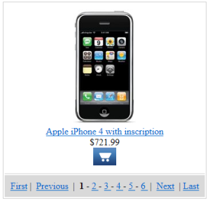

TemplateDataPager
The TemplateDataPager control provides a pager with a customizable format. You can use the TemplateDataPager with the following controls:
The TemplateDataPager automatically renders the list of numbers, but you need to write the code that binds the pager to the control that displays the data.
Note: If possible, it is recommended to use the newer UniPager control instead. The UniPager also supports format customization and is much easier to use.
Getting started
The following is a step-by-step tutorial that shows how to use the TemplateDataPager control with a CMSRepeater control that displays Smartphones (CMS.Smartphone pages):
Create a new Web form somewhere in your web project.
Add the following code to the page, inside the <form> element:
<asp:ScriptManager ID="manScript"runat="server"ScriptMode="Release"EnableViewState="false"/><table style="border: solid 1px #CCCCCC; margin-left: auto; margin-right: auto;"><tr><td style="border-bottom: solid 1px #CCCCCC; padding: 10px; text-align: center;"><cms:CMSRepeater ID="CMSRepeater1"runat="server"Path="/%"ClassNames="CMS.Smartphone"TransformationName="CorporateSite.Transformations.ProductList"/></td></tr><tr><td style="padding: 10px; background-color: #D9D9D9;"><cms:TemplateDataPager ID="TemplateDataPager1"runat="server"><NumberTemplate><a href="?Page=<%# Eval("PageNumber") %>"><%# Eval("PageNumber") %></a></NumberTemplate><SelectedNumberTemplate><b><%# Eval("PageNumber") %></b></SelectedNumberTemplate><SeparatorTemplate>-</SeparatorTemplate><FirstItemTemplate><a href="?Page=1">First</a> | </FirstItemTemplate><LastItemTemplate> | <a href="?Page=<%# pageCount %>">Last</a></LastItemTemplate><PreviousItemTemplate><a href="?Page=<%# previousPage %>">Previous</a> | </PreviousItemTemplate><NextItemTemplate> | <a href="?Page=<%# nextPage %>">Next</a></NextItemTemplate></cms:TemplateDataPager></td></tr></table>The web form uses a standard CMSRepeater control to display data. The pager format is specified using the templates defined between the tags of the <cms: TemplateDataPager> element.
The ScriptManager control included at the top is required by the transformation used to display smartphone pages. It is only there to ensure that the web form is functional as a standalone example. Typically, the ScriptManager is included on the website's master page.
Edit the web form's code behind according to the following (the class name and type may be different):
usingCMS.Helpers;publicpartialclassCMSControlsExamples_TemplateDataPager : System.Web.UI.Page{publicstringpageCount ="1";publicstringpreviousPage ="1";publicstringnextPage ="";protectedvoidPage_Load(objectsender, EventArgs e){// Gets the repeater's data sourceTemplateDataPager1.DataSource = CMSRepeater1.DataSource;// Sets the page sizeTemplateDataPager1.PageSize = 1;// Loads the current page number from the URL query stringTemplateDataPager1.CurrentPage = ValidationHelper.GetInteger(Request.QueryString["Page"], 1);// Gets the page number for the last linkpageCount = ((int)(TemplateDataPager1.PageCount - 1)).ToString();// Sets the default next page linknextPage = pageCount;// Sets the previous linkif((TemplateDataPager1.CurrentPage - 1) >= 1){previousPage = ((int)(TemplateDataPager1.CurrentPage - 1)).ToString();}// Sets the next linkif((TemplateDataPager1.CurrentPage + 1) <= (TemplateDataPager1.PageCount - 1)){nextPage = ((int)(TemplateDataPager1.CurrentPage + 1)).ToString();}// Assigns the paged datasource to the repeater and binds itCMSRepeater1.DataSource = TemplateDataPager1.PagedData;if(!DataHelper.DataSourceIsEmpty(CMSRepeater1.DataSource)){CMSRepeater1.DataBind();}}}Save the web form.
Right-click the web form in the Solution explorer and select View in Browser.
The control displays a customized pager:

Configuration
You can set the following properties for the TemplateDataPager control:
|
Common pager control properties |
Description |
|
CurrentPage |
The current page number. |
|
MaxPages |
Maximum number of pages that the control displays. |
|
PageCount |
The current number of pages (read only). |
|
PageSize |
The number of displayed items per page. |
|
TemplateDataPager properties |
Description |
Sample value |
|
DataSource |
Can be used to access the object of the pager's data source. |
|
|
NumberRepeater |
Gets the repeater control used to display page numbers. |
|
|
PagedData |
Gets the data to be paged. |
|
|
PagerPosition |
The position of the pager relative to the paged data. |
"Bottom" |
|
PagingMode |
Determines the type of the used paging parameter. It can either be passed through the URL (QueryString) or through postback (PostBack). |
"PostBack" |
|
RecordEnd |
Index of the last record on the current page. |
|
|
RecordStart |
Index of the first record on the current page. |
|
|
TotalRecords |
Total amount of data source records. |
|
Appearance and styling
The appearance of the TemplateDataPager control is determined by the code of its item templates. You can define the following templates:
|
Template name |
Description |
Sample value |
|
FirstItemTemplate |
Template used for the link to the first page in the pager. |
|
|
LastItemTemplate |
Template used for the link to the last page in the pager. |
|
|
NextItemTemplate |
Template used for the link to the next page. |
|
|
NumberTemplate |
Template used for page links in the pager. Use <%# Eval("PageNumber") %> to get the current page number. |
|
|
PreviousitemTemplate |
Template used for the link to the previous page. |
|
|
SelectedNumberTemplate |
Template used for the number of the currently selected page. |
|
|
SeparatorTemplate |
Template used for the separator between page links in the pager. |
|